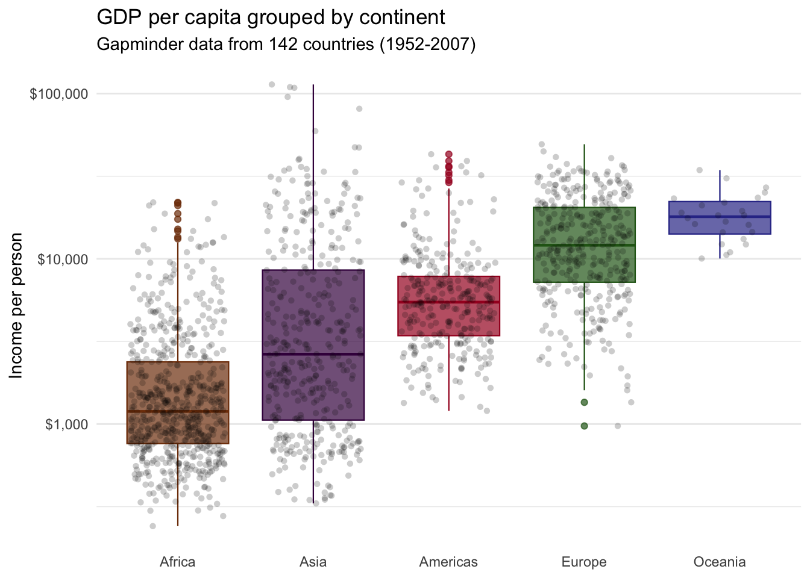
21 Boxplots with {ggplot2}
21.1 Boxplots with {ggplot2}
21.1.1 Learning Objectives
By the end of this lesson, you will be able to:
- Plot a boxplot to visualize the distribution of continuous data using
geom_boxplot(). - Reorder side-by-side boxplots with the
reorder()function. - Add a layer of data points on a bloxplot using
geom_jitter().
21.1.2 Introduction
21.1.2.1 Anatomy of a boxplot
A boxplot allows us to visualize the distribution of numeric variables.

It consists of two parts:
Box — Extends from the first to the third quartile (Q1 to Q3) with a line in the middle that represents the median. The range of values between Q1 and Q3 is also known as an Interquartile range (IQR).
Whiskers — Lines extending from both ends of the box indicate variability outside Q1 and Q3. The minimum/maximum whisker values are calculated as \(Q1 - 1.5 \times IQR\) to \(Q3 + 1.5 \times IQR\) . Everything outside is represented as an outlier using dots or other markers.
This is side-by-side boxplot. It lets us compare the distribution of a numerical variable split by the values of another variable.
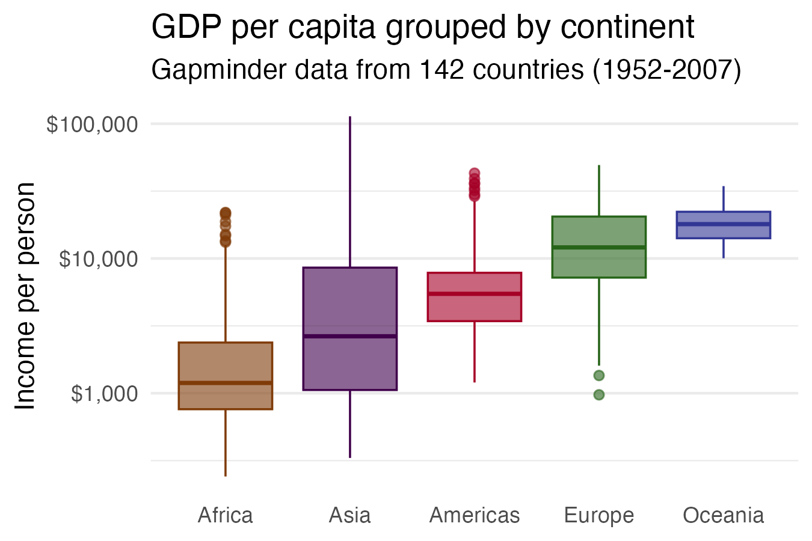
Here we are looking at the variation in GDP per capita – which is a continuous variable – split by different world regions – a categorical variable.
21.1.2.2 Potential pitfalls
Boxplots summarize the data into five numbers, so we might miss important characteristics of the data.
If the amount of data you are working with is not too large, adding individual data points can make the graphic more insightful.
21.1.3 Load packages
pacman::p_load(tidyverse,
gapminder,
here)21.1.4 The gapminder dataset
For this lesson, we will be visualizing global health and economic data from the gapminder data frame, which we’ve encountered in previous lessons.
## View first few rows of the data
head(gapminder)
Recap
Gapminder is a country-year dataset with information on 142 countries, divided in to 5 “continents” or world regions.
## Data summary
summary(gapminder) country continent year lifeExp
Afghanistan: 12 Africa :624 Min. :1952 Min. :23.60
Albania : 12 Americas:300 1st Qu.:1966 1st Qu.:48.20
Algeria : 12 Asia :396 Median :1980 Median :60.71
Angola : 12 Europe :360 Mean :1980 Mean :59.47
Argentina : 12 Oceania : 24 3rd Qu.:1993 3rd Qu.:70.85
Australia : 12 Max. :2007 Max. :82.60
(Other) :1632
pop gdpPercap
Min. :6.001e+04 Min. : 241.2
1st Qu.:2.794e+06 1st Qu.: 1202.1
Median :7.024e+06 Median : 3531.8
Mean :2.960e+07 Mean : 7215.3
3rd Qu.:1.959e+07 3rd Qu.: 9325.5
Max. :1.319e+09 Max. :113523.1
Data are recorded every 5 years from 1952 to 2007 (a total of 12 years).
21.1.5 Basic boxplots with geom_boxplot()
The function for creating boxplots in {ggplot2} is geom_boxplot().
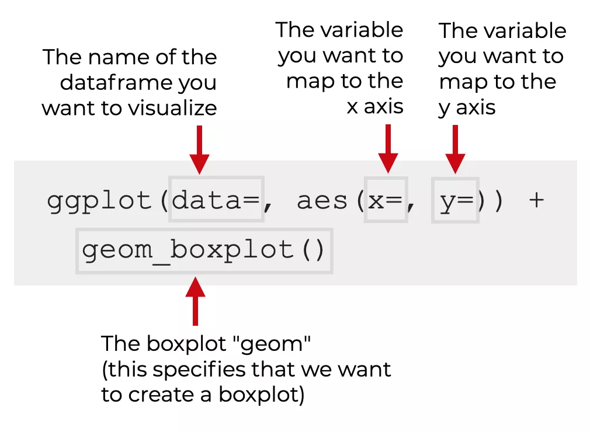
We’re going to make a base boxplot and then then add more aesthetics and layers.
Let’s start with a simple boxplot by mapping one numeric variable from gapminder, life expectancy (lifeExp) to the x position.
## Simple boxplot of lifeExp
ggplot(data = gapminder,
mapping = aes(x = lifeExp)) +
geom_boxplot()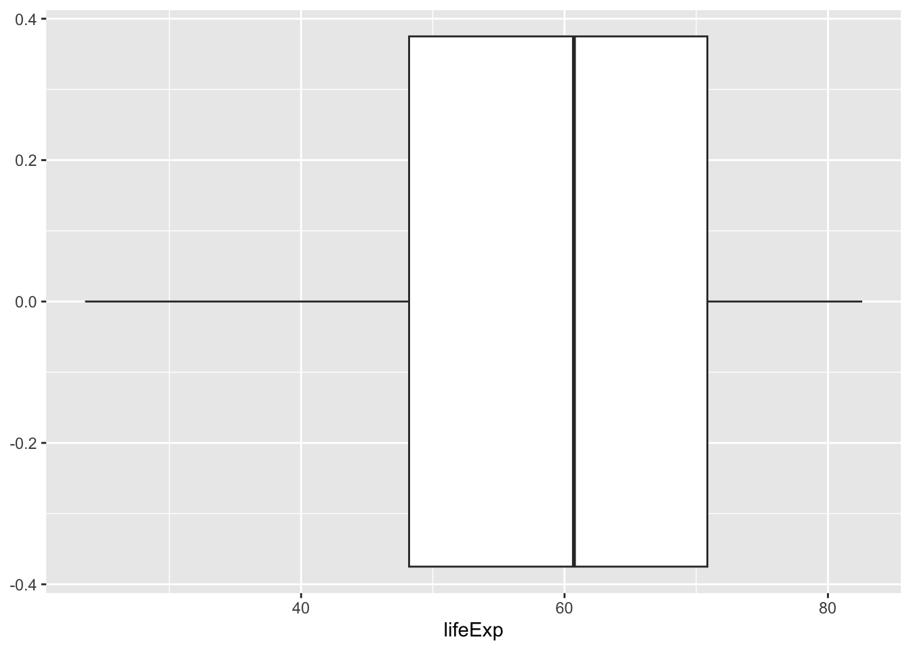
To create a side-by-side boxplot (which is what we usually want), we need to add a categorical variable to the y position aesthetic.
Let’s compare life expectancy distributions between continents - i.e., split lifeExp by the continent variable.
## Side-by-side boxplot of lifeExp by continent
ggplot(gapminder,
aes(x = lifeExp,
y = continent)) +
geom_boxplot()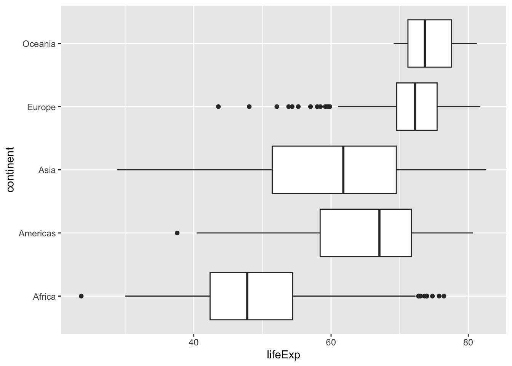
The result is a basic boxplot of lifeExp for multiple continents.
## Side-by-side boxplot of lifeExp by continent (vertical)
ggplot(data = gapminder,
mapping = aes(x = continent,
y = lifeExp)) +
geom_boxplot()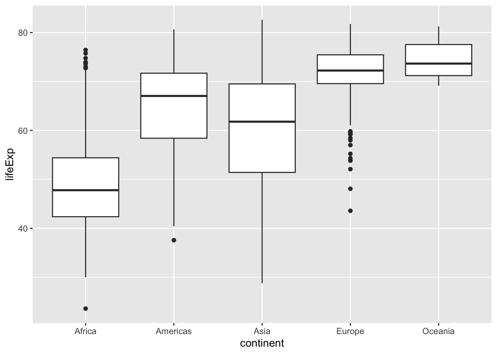
Let us color in the boxes. We can map the continent variable to fill so that each box is colored according to which continent it represents.
## Fill each continent with a different color
ggplot(gapminder,
aes(x = continent,
y = lifeExp,
fill = continent)) +
geom_boxplot()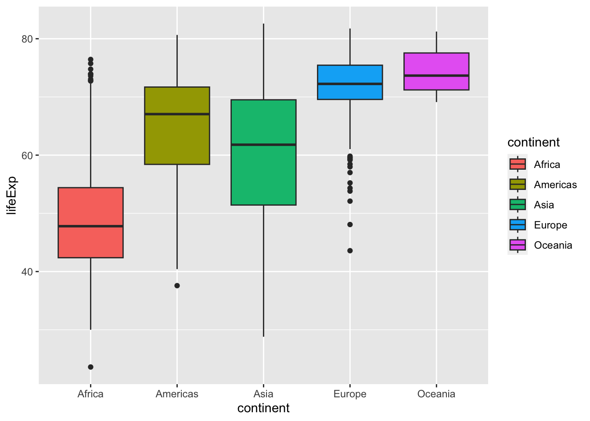
Reminder
{ggplot2} allows you to color by specifying a variable. We can use fill argument inside the aes() function to specify which variable is mapped to fill color.
We can also add the color and alpha aesthetics to change outline color and transparency.
## Change outline color and increase transparency
ggplot(gapminder,
aes(x = continent,
y = lifeExp,
fill = continent,
color = continent)) +
geom_boxplot(alpha = 0.6)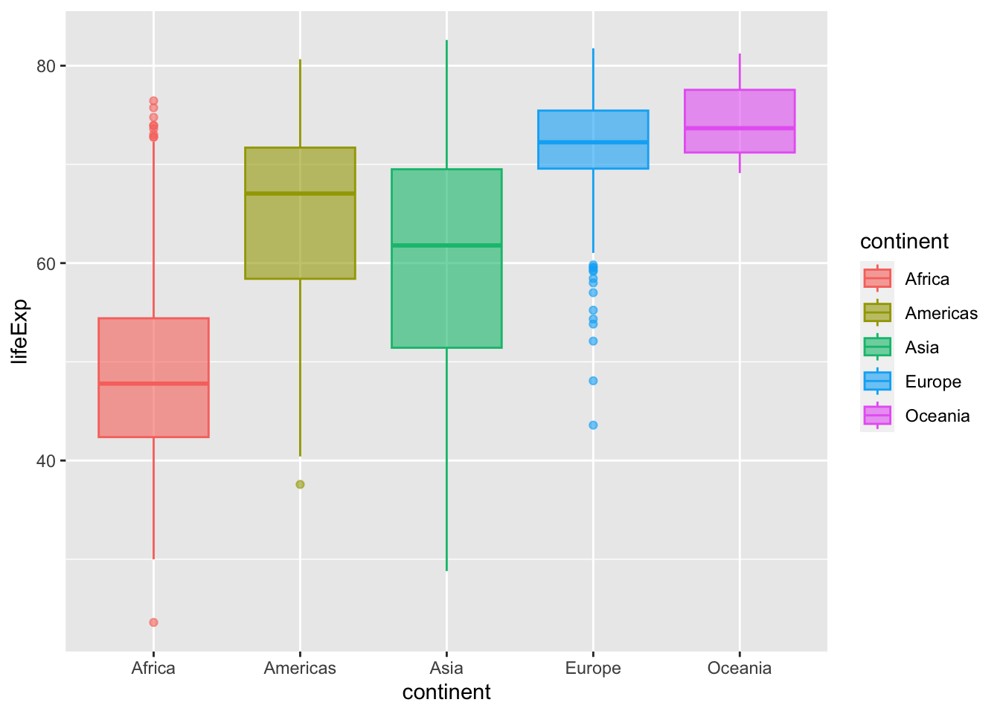
Practice
Using the
gapminderdata frame create a boxplot comparing the distribution of GDP per capita (gdpPercap) across continents. Map the fill color of the boxes tocontinent, and set the line width to 1.Building on your code from the last question, add a
scale_*()function that transforms the y-axis to a logarithmic scale.
21.1.6 Reordering boxes with reorder()
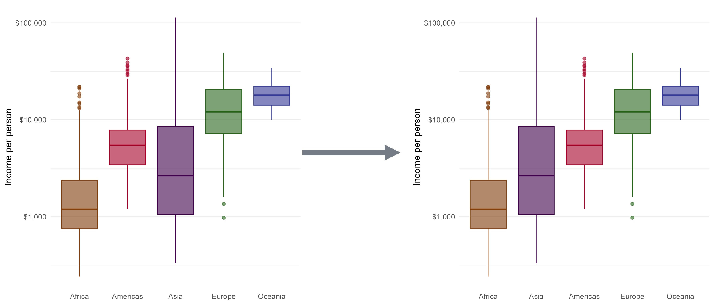
The values of the continent variable are ordered alphabetically by default. If you look at the x-axis, it starts with Africa and goes alphabetically to Oceania.
It might be more useful to order them according to life expectancy, the y-axis variable.
We can change the levels of a factor in R using the reorder() function. If we reorder the levels of the continent variable, the boxplots will be plotted on the x-axis in that order.
reorder() treats its first argument as a categorical variable , and reorders its levels based on the values of a second numeric variable.
To reorder the levels of the continent variable based on lifeExp, we will use the syntax reorder(CATEGORIAL_VAR, NUMERIC_VAR). Like this: reorder(continent, lifeExp).
Here we will edit the x argument and tell ggplot() to reorder the variable.
ggplot(gapminder,
aes(x = reorder(continent, lifeExp),
y = lifeExp,
fill = continent,
color = continent)) +
geom_boxplot(alpha = 0.6)
We can clearly see that there are notable differences in median life expectancy between continents. However, there is a lot of overlap between the range of values from each continent. For example, the median life expectancy for the continent of Africa is lower than that of Europe, but several African countries have life expectancy values higher than than the majority of European countries.
21.1.6.1 Reordering by function
The default method reorders factor based on the mean of the numeric variable.
We can add a third argument to choose a different method, like the median or maximum.
## Arrange boxplots by median life expectancy
ggplot(gapminder,
aes(x = reorder(continent, lifeExp, median),
y = lifeExp,
fill = continent,
color = continent)) +
geom_boxplot(alpha = 0.6)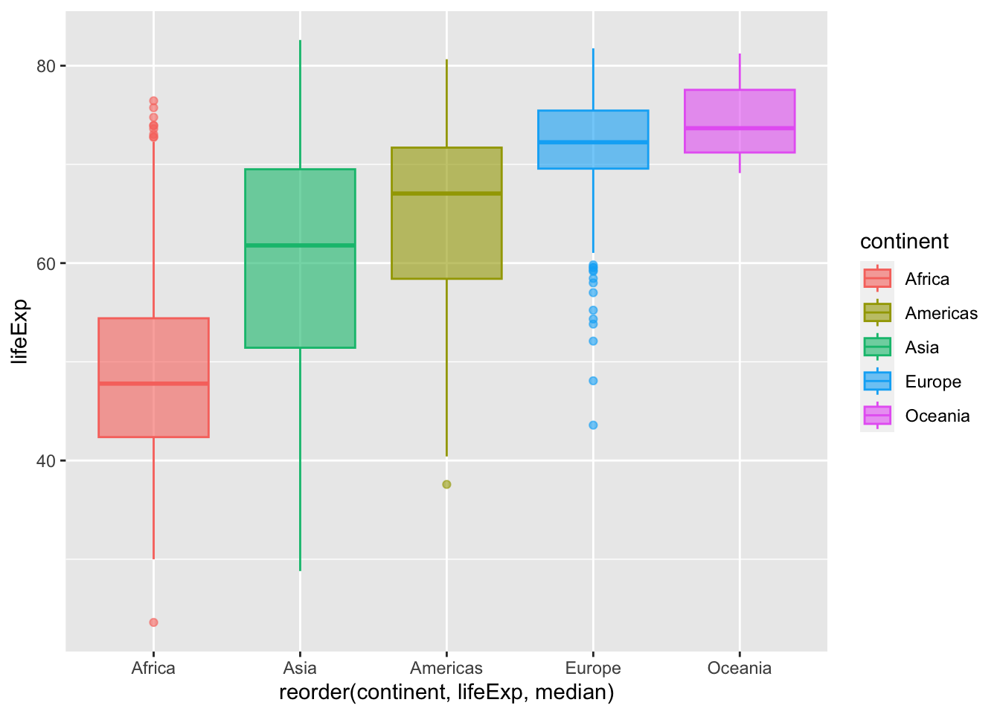
## Arrange boxplots by max life expectancy
ggplot(gapminder,
aes(x = reorder(continent, lifeExp, max),
y = lifeExp,
fill = continent,
color = continent)) +
geom_boxplot(alpha = 0.6)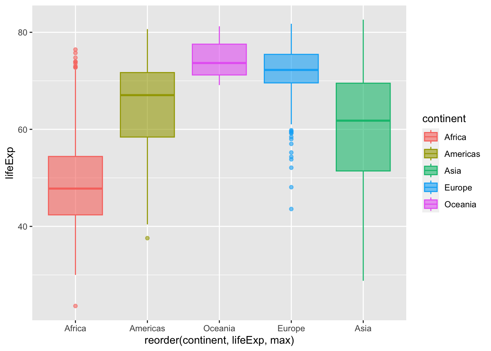
The boxplots are arranged in increasing order.
To sort boxes in boxplot in descending order, we add negation to lifeExp within the reorder() function.
## Arrange boxplots by descending median life expectancy
ggplot(gapminder,
aes(x = reorder(continent, -lifeExp, median),
y = lifeExp,
fill = continent,
color = continent)) +
geom_boxplot(alpha = 0.6)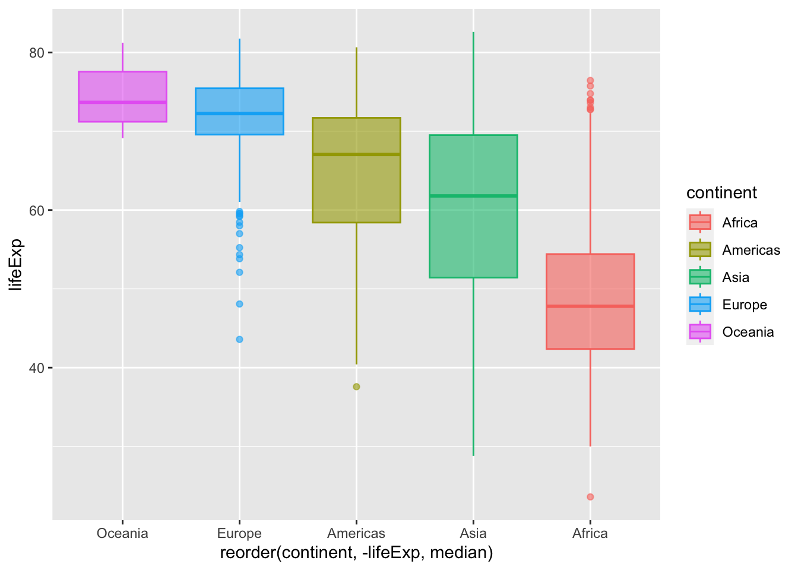
Practice
Create the boxplot showing the distribution of GDP per capita for each continent, like you did in practice question 2. Retain the fill, line width, and scale from that plot.
Now, reorder the boxes by mean gdpPercap, in descending order.
Building on the code from the previous question, add labels to your plot.
Set the main title to “Variation in GDP per capita across continents (1952-2007)”
Change the x-axis title to “Continent”, and
Change the y-axis title to “Income per person (USD)”.
21.1.7 Adding data points with geom_jitter()
Boxplots give us a very high-level summary of the distribution of a numeric variable for several groups. The problem is that summarizing also means losing information.
If we consider our lifeExp boxplot, it is easy to conclude that Oceania has a higher value than the others. However, we cannot see the underlying distribution of data points in each group or their number of observations.
## Basic lifeExp boxplot from earlier
ggplot(gapminder,
aes(x = reorder(continent, lifeExp),
y = lifeExp,
fill = continent,
color = continent)) +
geom_boxplot(alpha = 0.6)Let’s see what happens when the boxplot is improved using additional elements.
One way to display the distribution of individual data points is to plot an additional layer of points on top of the boxplot.
We could do this by simply adding the geom_point() function.
ggplot(gapminder,
aes(x = reorder(continent, lifeExp),
y = lifeExp,
fill = continent)) +
geom_boxplot()+
geom_point()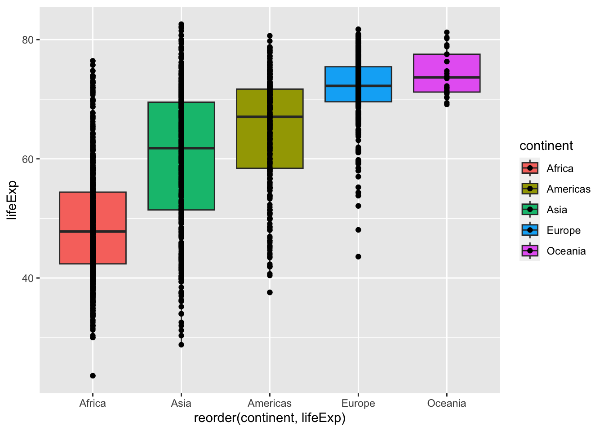
However, geom_point() as has plotted all the data points on a vertical line. That’s not very useful since all the points with same life expectancy value directly overlap and are plotted on top of each other.
One solution for this is to randomly “jitter” data points horizontally. ggplot allows you to do that with the geom_jitter() function.
ggplot(gapminder,
aes(x = reorder(continent, lifeExp),
y = lifeExp,
fill = continent)) +
geom_boxplot() +
geom_jitter()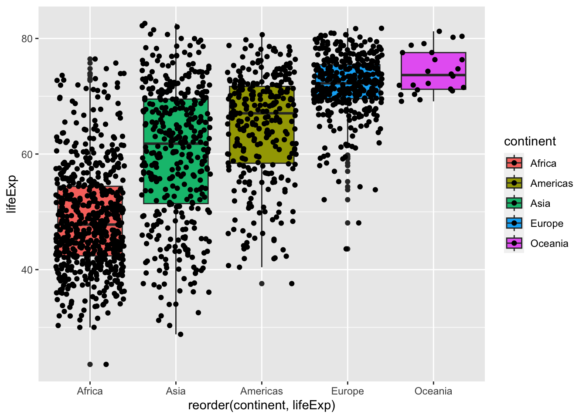
You can also control the amount of jittering with width argument and specify opacity of points with alpha.
ggplot(gapminder,
aes(x = reorder(continent, lifeExp),
y = lifeExp,
fill = continent)) +
geom_boxplot() +
geom_jitter(width = 0.25,
alpha = 0.5)
Here some new patterns appear clearly. Oceania has a small sample size compared to the other groups. This is definitely something you want to find out before saying that Oceania has higher life expectancy than the others.
Recap
Boxplots have the limitation that they summarize the data into five numbers: the 1st quartile, the median (the 2nd quartile), the 3rd quartile, and the upper and lower whiskers. By doing this, we might miss important characteristics of the data. One way to avoid this is by showing the data with points.
Practice
Create the boxplot showing the distribution of GDP per capita for each continent, like you did in practice question 3. Then add a layer of jittered points.
Adapt your answer to question 4 to make the points 45% transparent and change the width of the jitter to 0.3mm.
Challenge
Adding mean markers to a boxplot
You may want to visualize the mean (average) value of the distributions on a boxplot.
We can do this by adding a statistics layer using the stat_summary() function.
## Add a marker to show the mean
ggplot(gapminder,
aes(x = reorder(continent, lifeExp),
y = lifeExp,
fill = continent,
color = continent)) +
geom_boxplot(alpha = 0.6) +
stat_summary(fun = "mean",
geom = "point",
size = 3,
shape = 23,
fill = "white")21.1.8 Wrap up
Side-by-side boxplots provide us with a way to compare the distribution of a continuous variable across multiple values of another variable. One can see where the median falls across the different groups by comparing the solid lines in the center of the boxes.
To study the spread of a continuous variable within one of the boxes, look at both the length of the box and also how far the whiskers extend from either end of the box. Outliers are even more easily identified when looking at a boxplot than when looking at a histogram as they are marked with distinct points.
21.1.9 Learning Outcomes
- You can plot a boxplot to visualize the distribution of continuous data using
geom_boxplot(). - You can reorder side-by-side boxplots with the
reorder()function. - You can add a layer of individual data points on a bloxplot using
geom_jitter().
References
Some material in this lesson was adapted from the following sources:
- Ismay, Chester, and Albert Y. Kim. 2022. A ModernDive into R and the Tidyverse. https://moderndive.com/.
21.2 Solutions
.SOLUTION_q1()ggplot(data = gapminder,
mapping = aes(x = continent, y = gdpPercap, fill = continent)) +
geom_boxplot(linewidth = 1).SOLUTION_q2()ggplot(data = gapminder,
mapping = aes(x = continent, y = gdpPercap, fill = continent)) +
geom_boxplot(linewidth = 1) +
scale_y_log10().SOLUTION_q3() ggplot(data = gapminder,
mapping = aes(
x = reorder(continent, -gdpPercap),
y = gdpPercap,
fill = continent)) +
geom_boxplot(linewidth = 1) +
scale_y_log10().SOLUTION_q4()ggplot(data = gapminder,
mapping = aes(
x = reorder(continent, -gdpPercap),
y = gdpPercap,
fill = continent)) +
geom_boxplot(linewidth = 1) +
scale_y_log10() +
labs(title = "Variation in GDP per capita across continents (1952-2007)",
x = "Continent",
y = "Income per person (USD)").SOLUTION_q5()ggplot(data = gapminder,
mapping = aes(
x = reorder(continent, -gdpPercap),
y = gdpPercap,
fill = continent)) +
geom_boxplot(linewidth = 1) +
scale_y_log10() +
labs(title = "Variation in GDP per capita across continents (1952-2007)",
x = "Continent",
y = "Income per person (USD)") +
geom_jitter().SOLUTION_q6()ggplot(data = gapminder,
mapping = aes(
x = reorder(continent, -gdpPercap),
y = gdpPercap,
fill = continent)) +
geom_boxplot(linewidth = 1) +
scale_y_log10() +
labs(title = "Variation in GDP per capita across continents (1952-2007)",
x = "Continent",
y = "Income per person (USD)") +
geom_jitter(width = 0.3, alpha = 0.55)This work is licensed under the Creative Commons Attribution Share Alike license.